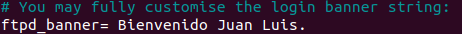
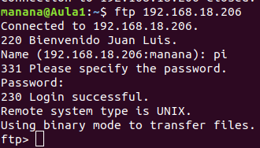
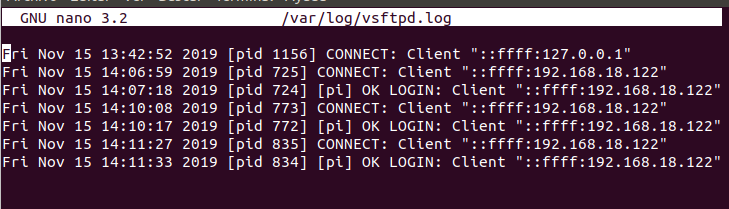
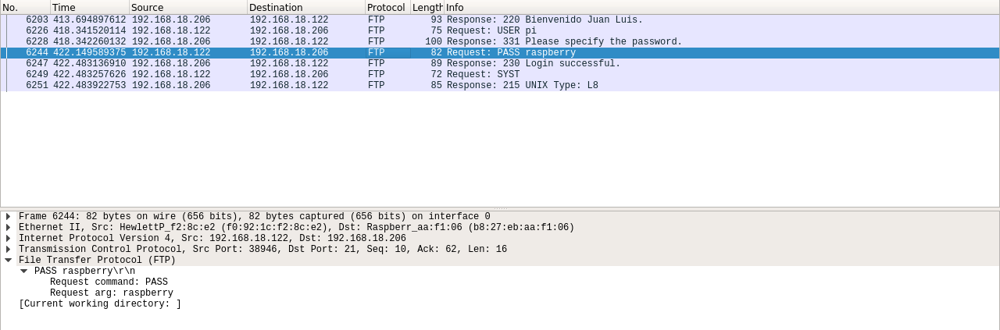
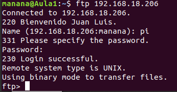
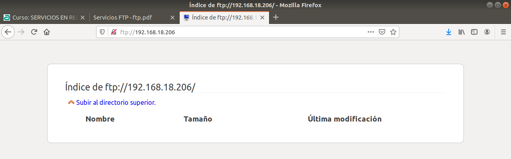
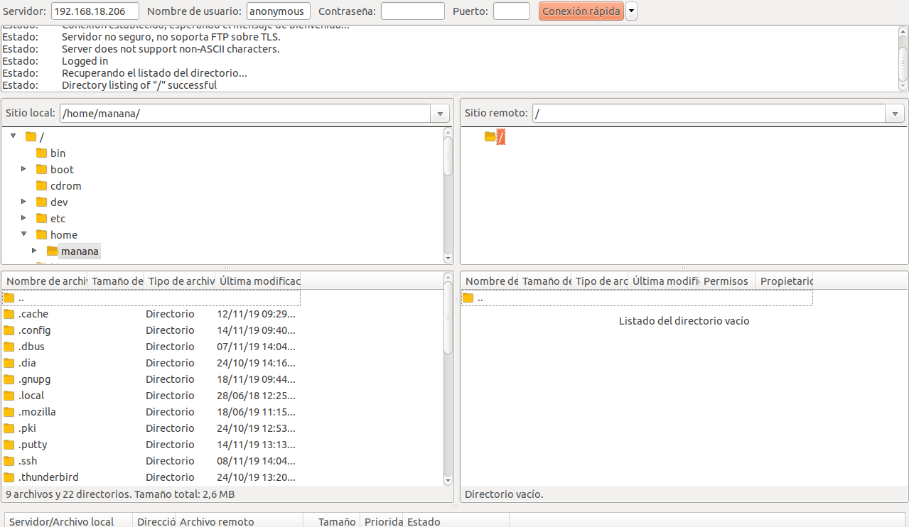
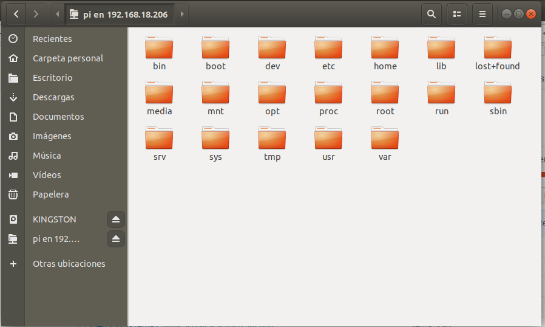

Voy a instalar y configurar el servidor FTP
1-Instalamos el vsftpd en raspberry pi con el comando sudo apt install vsftpd, comprobamos en nuestro equipo que el servidor esta instalado
2- Configuramos el servidor para descargas anónimas.

3- Configuramos el servidor para ponerlo para que los usuarios puedan subir y bajar archivos de él.

4- El modo pasivo ya viene por defecto.
5- Los logs ya vienen configurados por defecto.
6- Para cambiar el mensaje de bienvenida debemos meternos en la configuración de vsftpd y cambiar el siguente comentario el cual debemos quitarle la propiedad de comentario.

Este será el resultado:

1- LOGS:

2- Mensaje de bienvenida
3- Wireshark:

4-
Consola:

Buscador:

Filezilla:

Buscador de archivos:
